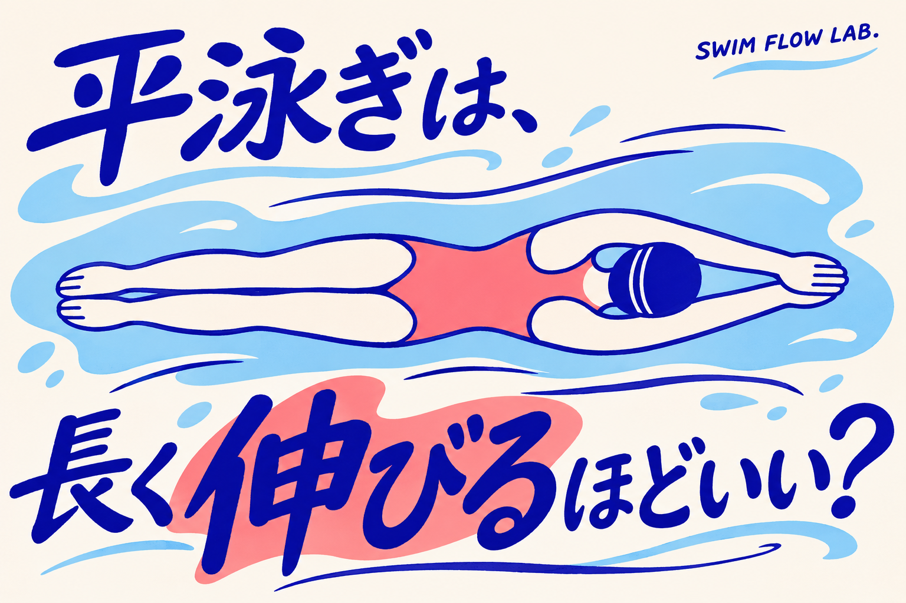

SWIMMING RESEARCH / 30
平泳ぎは、長く伸びるほどいい？
止まる時間を競わず、蹴った後と次の一かきをつなぐ
2026年11月21日 公開

平泳ぎで「もっと伸びて」と言われたら、どれくらい待てばよいのでしょう。長く待った方が上手に見える気もするけれど、待つほど前へ進まなくなる感じもある。「伸びる」は、分かるようで迷いやすい言葉です。
長く伸びれば、いつでもよいわけではありません。研究では、上手な選手も泳ぐペースに合わせて、伸びる時間を変えていました。形を整えることと、その形のまま待つ時間は、分けて考えられます。
この記事は、水面で繰り返す普通の平泳ぎの話です。スタートやターン直後、水中で行う「ひとかきひとけり」とは、見る区間が違います。
伸びは、一回の泳ぎの中の一部分
まず「どこからどこまで」をそろえましょう。平泳ぎは、腕でかき、腕を前へ戻しながら脚を次のキックへ準備し、蹴った後に身体を細長くそろえて、次のかきへつなぎます。この繰り返し一回分を「一周期」と呼びます。
図では見分けやすいように四つの場面に分けていますが、一つずつ完全に止めて行うという意味ではありません。腕を戻す間に脚も準備するなど、動きには重なりがあります。箱の数を、身体が停止する回数だと思わないでください。
一周期の中で、伸びを見る
腕で水をとらえ、かく。
腕を戻す動きと脚の準備には重なりがある。
脚の動きから、身体をそろえる。
そろえた姿勢から次のかきへつなぐ。
平泳ぎの一周期の動きを4場面に整理する。動作は重なり、等時間の停止姿勢ではない。
今日注目するのは、蹴った後に身体をそろえて進み、次に腕で水をとらえにいくまでの間です。ここを、ただ何もしない「休み」と呼ぶと、身体の形が抜け落ちます。反対に「伸びの姿勢が大事」と聞いて、いつまでも同じ形でいようとすると、時間の話が抜け落ちます。
筆箱を机の上で滑らせる場面を想像すると、「細く整える形」と「いつ次の動きを加えるか」を分けやすくなります。これは時間を考えるためのたとえです。人が水中で進む速さを、机の摩擦から計算しているわけではありません。
コーチの「伸びて」が、腕や脚をそろえる形のことなのか、次のかきを急ぎすぎない時間のことなのか。同じ言葉でも、その場で伝えたいことは違うかもしれません。まず「形ですか、待つ時間ですか」と聞けると、練習の課題がはっきりします。
上手な選手も、ペースが違えば間を変える
Cholletらの2004年の研究は、高い競技レベルの泳者16人を対象に、200m・100m・50mのレースに対応する三つのペースで、腕と脚の時間の組み合わせを調べました。腕と脚の動きの始まりや終わりを映像で捉え、その間を比べる方法です。
速いペースでは、泳ぎの回数が増え、一周期で進む距離は短くなり、伸びの時間も短くなる関係が見られました。「上手なら一かきでいつも長く進み、いつも長く伸びる」という一つの見方では説明しきれません。2004年の原著抄録
同じ人でも、泳ぐ目的が違う
そのペースに合う、一周期の時間の使い方。
研究では、伸びの時間が短くなる関係が見られた。
長距離のペースと短距離の速いペースでは、伸びの時間の使い方が違う。観察された関係であって、短くすれば速くなる証明ではない。
2005年の別の報告も、男子9人・女子8人のエリート泳者を三つのペースで調べ、速いペースで伸びの時間が短くなったと報告しています。ただし、二つの報告の対象が完全に独立した集団かは今回確認できていません。人数を足して、より大きな実験と扱うことはしません。2005年の原著抄録
ここから言えるのは、伸びの時間が泳ぐ速さと無関係な固定値ではない、ということです。研究は「子どもは何秒待てばよいか」を決めていません。記事の図にも、誰にでも正しい秒数や、研究で確認していない速度の曲線は載せていません。
ゆっくり長く泳ぐ一本と、短い距離を速く泳ぐ一本。そのどちらでも同じ秒数を守ろうとする前に、「今日はどんな泳ぎをしたいのか」をそろえてみましょう。問いが変わると、よい伸びを考える物差しも変わります。
長く待つことと、よく進むことは別
「長く伸びた」と「長く進んだ」は、似た言葉ですが違うことです。前者は時間、後者は距離。長い時間を使っても、進んだ距離が同じように増えるとは限りません。水泳時計の数字や、かいた回数を一つだけ見ていると、この違いを見落としやすくなります。
たとえば、同じ壁から同じ壁まで、少ないかき数で着いたとします。それは回数についての発見です。前より時間がかかったのか、息苦しさはなかったのか、目的のペースだったのかまでは、その回数だけでは分かりません。回数を減らすこと自体を今日の勝ち負けにしないでください。
時間・距離・回数は、違う情報
同じ壁から同じ壁まで
その区間に何秒かかった？
どこからどこまで泳いだ？
同じ区間で何周期だった？
同じ壁から同じ壁までの区間を、時間・距離・周期数という別の情報で見る。
研究で上手な選手の間が短かったと聞いて、今度は休まず腕を回し続ける、と逆へ振り切る必要もありません。かきを急いで、脚を蹴り終える前から別の課題へ気を取られていたら、本人が感じたい「蹴った後の進み」が分からなくなることもあります。ここは、図と実際の泳ぎをコーチに対応させてもらう場面です。
見たいのは、待った秒数の長さそのものではなく、蹴った後から次のかきへ移るつながりです。「まだ滑っている感じがある」「次にかこうとすると慌てる」といった本人の感覚と、外から見た腕・脚の時点を、別々の情報として持ち寄ります。感覚をそのまま速度の測定値にはしません。
だから、図の中では時計、距離の区間、動作の回数を別の印にしました。これらをひとまとめの点数へ変えず、一つずつ開いて見る。それが、伸びを単なる我慢の時間にしないための準備です。
次の一本は、伸びを「長く」より「つなぐ」
次の練習では、まず普段どおりの平泳ぎを、指導者に見てもらいましょう。無理に息を止めたり、伸びの限界まで待ったりする課題ではありません。「蹴り終わってから次にかくところを見てください」と、見る区間を短く指定します。
その上で、コーチが形の課題だと判断したなら、腕や脚をそろえる一つのことへ。時間の課題なら、次の動作へ移るタイミングへ。一度に両方を変えてしまうと、何が泳ぎやすさに関わったのかが分かりにくくなります。
見る区間を決めて、一つだけ試す
- 1まず見る
蹴り終わりから次のかきまでを見てもらう。
- 2一つ選ぶ
形なのか、次へ移る時点なのかをコーチと決める。
- 3戻って比べる
同じ区間・同じくらいの楽さで、つながりを話す。
そろえた身体の形を見ることと、次のかきを始める時点を見ることを区別する。
比べるなら同じ泳ぐ区間、同じくらいの楽さで、コーチと決めた一つの変更を試します。変更前と後で、時間だけでなく「慌てずつながったか」「呼吸が無理なくできたか」も話します。これは研究で効果を確かめた練習法ではなく、記事から提案する観察の進め方です。
うまくつながらなければ、待つ時間をさらに増やして解決しようとせず、普段の泳ぎへ戻して相談できます。競技のペースを変える練習と、動作を覚える練習では、目指すことも違います。一回の不慣れな泳ぎだけで、「自分には伸びが要らない」と結論を出さなくて大丈夫です。
平泳ぎの「すーっ」と進む感じは、長さを競うためだけのものではありません。蹴る動きが次の一かきへ渡っていく、短い橋のような時間です。その橋をどれくらいの速さで渡るかを、今日の目的に合わせて考えてみましょう。
研究から分かったこと
- 研究の目的
- 平泳ぎの腕と脚の組み合わせが、泳ぐペースに応じてどう変わるかを調べた研究を読みました。
- 何を比べたか
- 2004年の報告は高い競技レベルの16人を、2005年の報告は男子9人・女子8人を三つのペースで比較しています。
- 何が分かったか
- 速いペースでは伸びの時間が短くなる関係が報告されています。全員に最適な秒数を決めた研究ではありません。
- この記事の答え
- よい伸びは、長く待つことだけでは決まりません。形と時間を分け、次のかきへどうつながるかを見ます。 速いペースで伸びが短かったことは、伸びを短くすれば誰でも速くなるという証明ではありません。
平泳ぎの「伸び」は、長さだけを競う時間ではありません。蹴った後の姿勢と、次のかきを始める時点は別のことです。長く待つほどよいとも、すぐかけばよいとも言えない。その間をどうつなぐかが、泳ぐ速さによって変わるのです。
参考文献と確認範囲
- Chollet D, et al. (2004). Evaluation of arm-leg coordination in flat breaststroke. International Journal of Sports Medicine, 25(7), 486–495.
原著抄録を確認。対象・ペースと変化の方向を採用。本文の図表・個人値は未確認。
- Seifert L, Chollet D. (2005). A new index of flat breaststroke propulsion: A comparison of elite men and women. Journal of Sports Sciences, 23(3), 309–320.
出版社掲載の原著抄録を確認。時間の組み合わせと対象条件を採用。二報の対象者の重複は未確認。